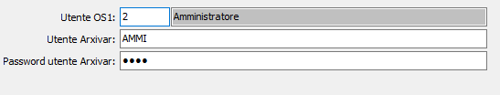

Utenti Arxivar
La tabella consente di Collegare gli utenti di OS1 a quelli di Arxivar; viene richiesto il codice utente di OS1 ed il codice e la password dell'utente Arxivar da collegare. La tabella viene utilizzata per effettuare la connessione, in caso sia configurata l'archiviazione tramite Arxivar - WebService.
